20 photos · 4 cities · photo 1 (outlined) is the mosaic's large photo · generated 2026-11-08
Ho Chi Minh City ho-chi-minh-city
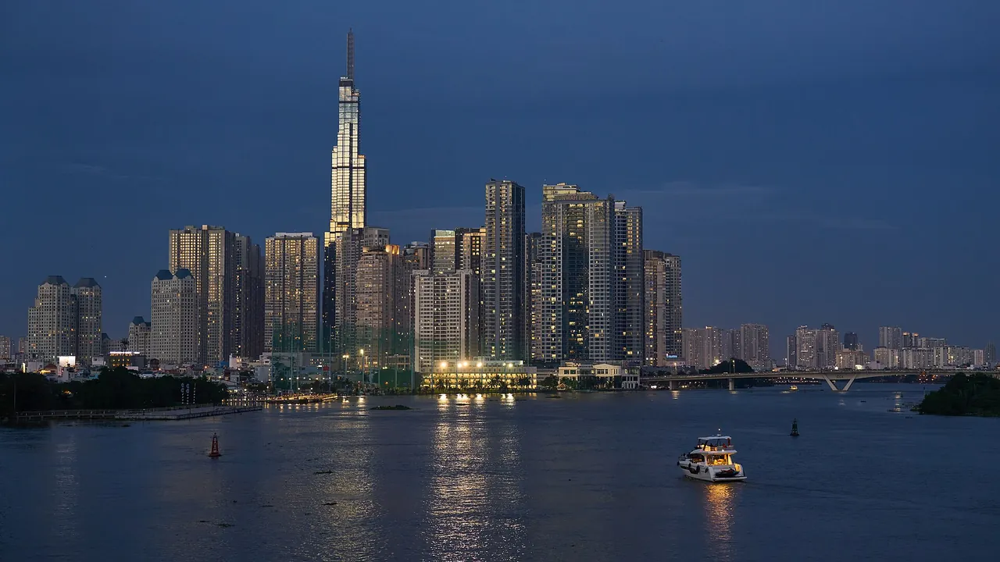
1. Landmark 81 and the Bình Thạnh riverfront across the Saigon River at blue hourAlt: A cluster of lit high-rise towers, led by one very tall spire, across a wide river at dusk, with a small boat in the foregroundRadek Kucharski · CC BY 2.0 · Commons · 1280×720
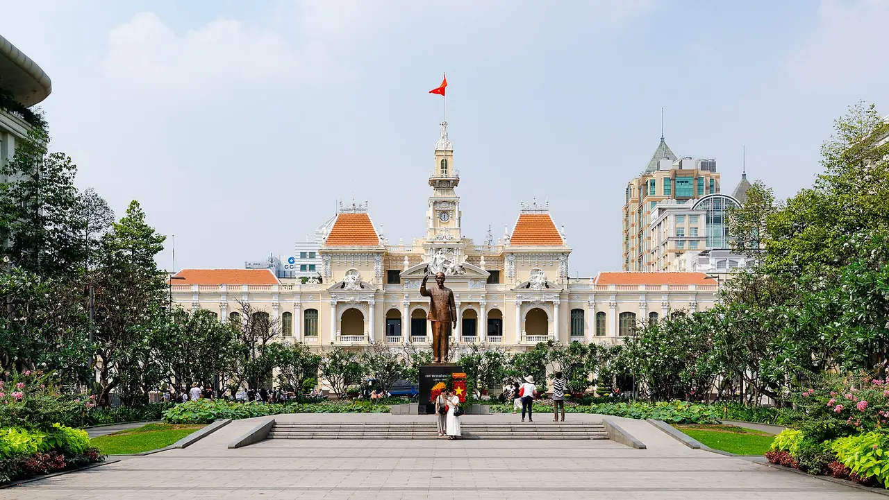
2. The French-colonial City Hall and the Hồ Chí Minh statue at the top of Nguyễn HuệAlt: A cream colonial building with orange roofs and a clock tower behind a bronze statue on a plinth, framed by trees and a paved squareSteffen Schmitz (Carschten) · CC BY-SA 4.0 · Commons · 1280×721
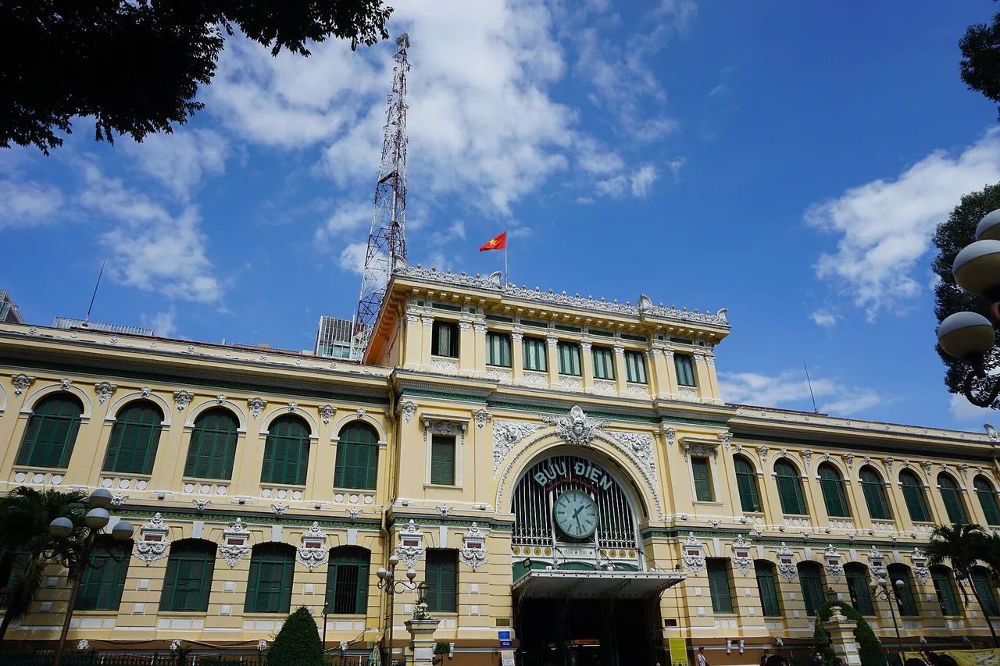
3. The Central Post Office, built 1886–1891Alt: A long cream and yellow colonial building with green shutters, a large clock over the arched entrance and a red flag on the roof, under a blue skyYesvn123 · CC BY-SA 4.0 · Commons · 1280×853
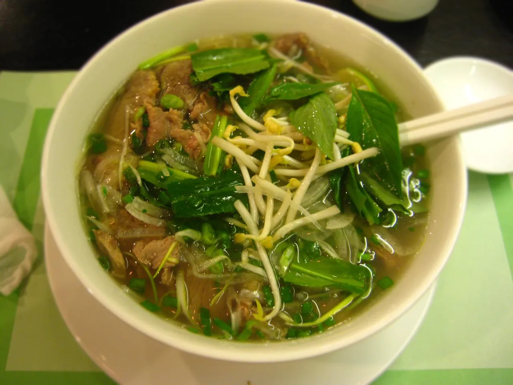
4. A bowl of beef phở with basil and bean sproutsAlt: A white bowl of noodle soup with slices of beef, fresh basil, bean sprouts and chopsticks resting on the rimandroog · CC BY 2.0 · Commons · 1280×960
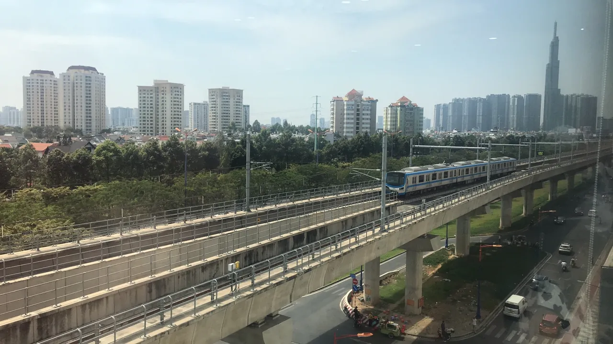
5. A Metro Line 1 train on the viaduct through Thảo Điền, with Landmark 81 behindAlt: A silver and blue train on an elevated concrete viaduct above a road, with apartment towers and a very tall spire in the distanceHikariTenshi · CC BY 4.0 · Commons · 1280×720 · focus 40% 50%
Hanoi hanoi
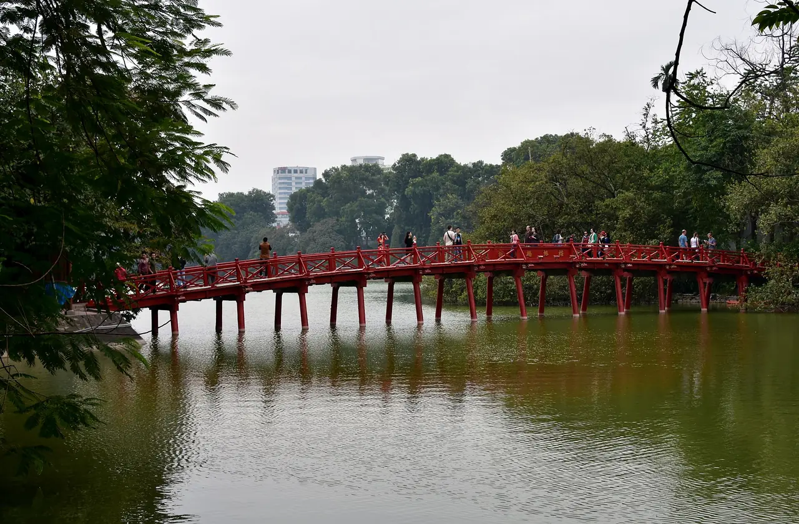
1. The red Thê Húc bridge on Hoàn Kiếm Lake, at the heart of the old cityAlt: A red wooden footbridge on red posts crossing a green lake to a wooded island, with people walking acrossRichard Mortel · CC BY 2.0 · Commons · 1280×840
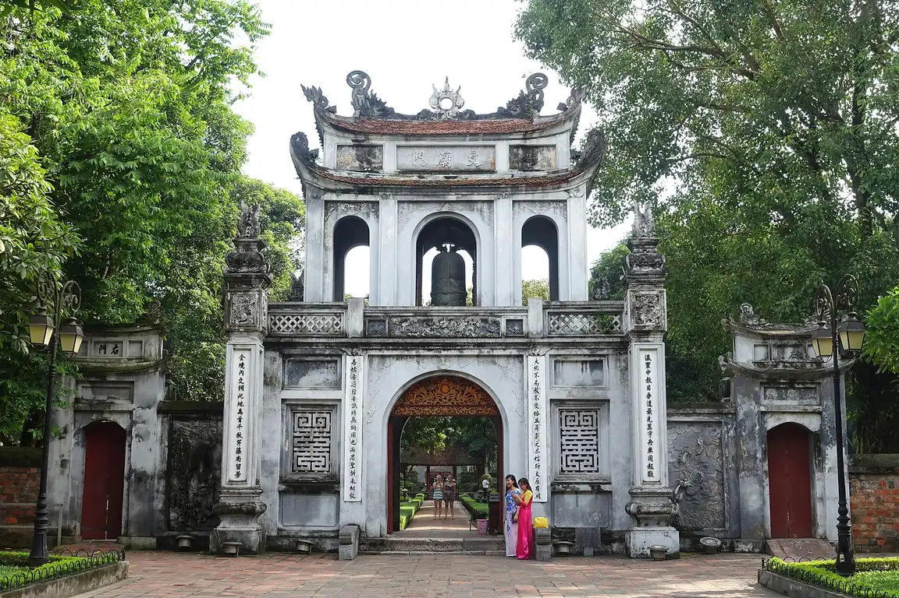
2. The main gate of the Temple of Literature, founded in 1070Alt: A white stone gateway with a bell in its upper arches and an open central arch, between tall treesDaderot · CC0 · Commons · 1152×768
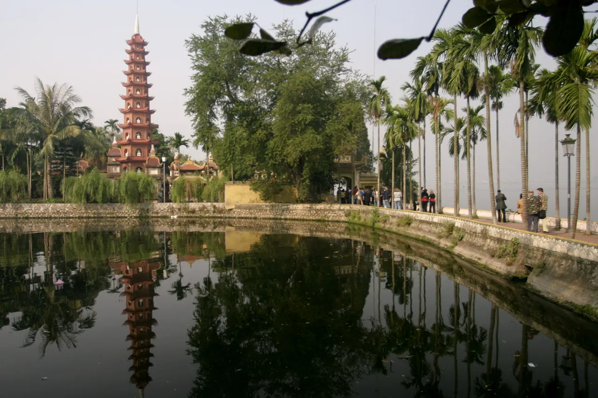
3. Trấn Quốc Pagoda on West Lake, near the Tây Hồ expat districtAlt: A tall red tiered pagoda among palms reflected in still water, with a lakeside path lined with palm treesGreg Willis · CC BY-SA 2.0 · Commons · 1280×853
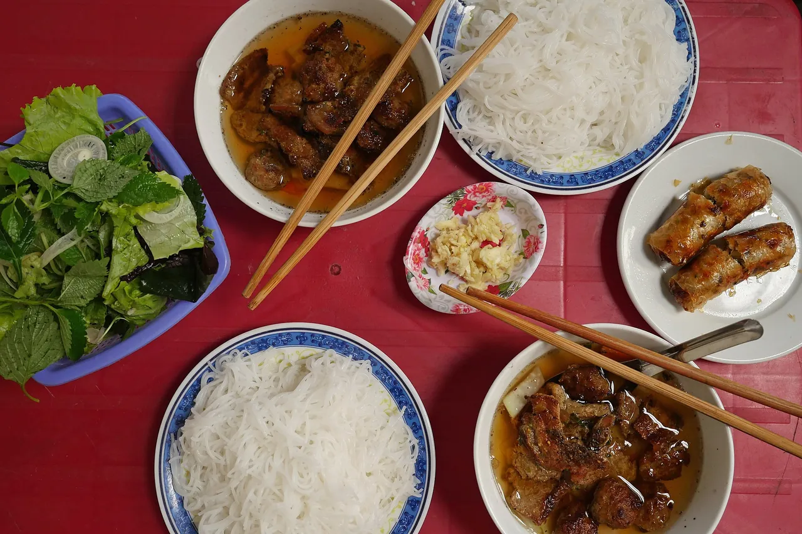
4. Bún chả, Hanoi's grilled pork with rice noodles and herbsAlt: Bowls of grilled pork in broth, plates of white rice noodles, fresh herbs and spring rolls on a red table, seen from aboveValentin Orange · CC BY-SA 4.0 · Commons · 1280×853
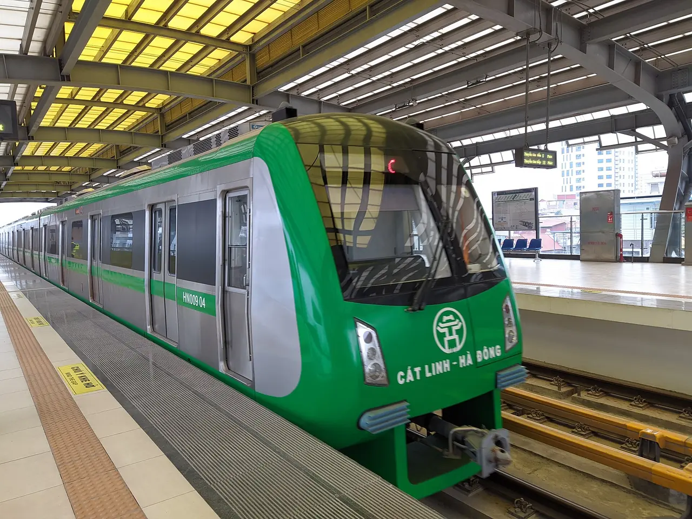
5. A Cát Linh–Hà Đông metro train at Vành Đai 3 stationAlt: A green and silver metro train standing at an elevated station platform under a yellow canopy roofLouis Anderson · CC BY-SA 4.0 · Commons · 1280×960
Da Nang da-nang
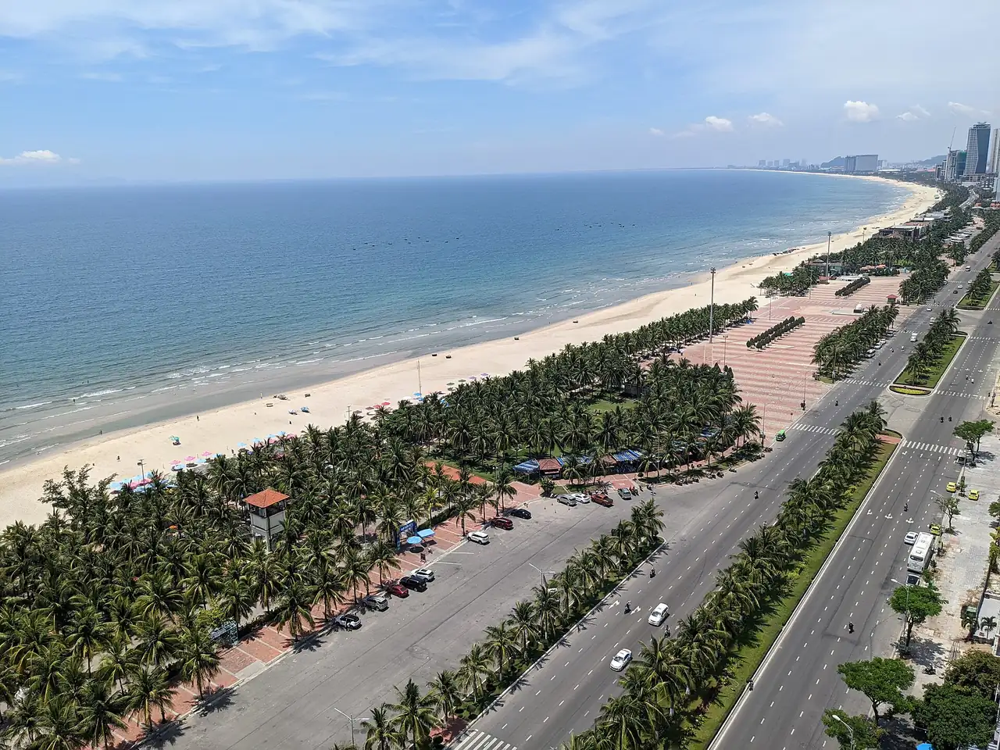
1. Mỹ Khê beach and its palm-lined promenadeAlt: A long curve of pale sand beach and calm blue sea seen from above, with a band of palm trees and a wide boulevard beside itJpatokal · CC BY-SA 4.0 · Commons · 1280×960
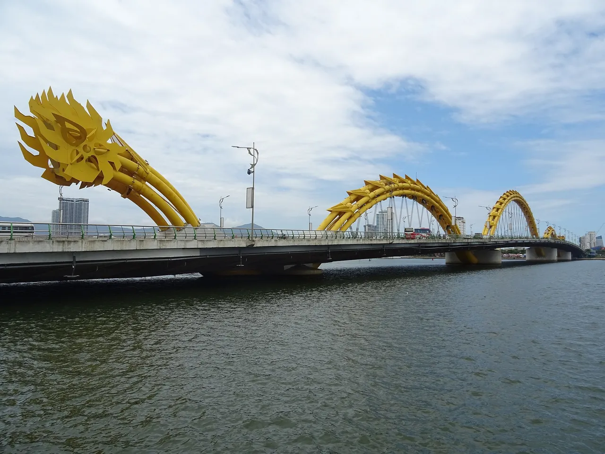
2. The Dragon Bridge over the Hàn River in the city centreAlt: A road bridge over a river with a yellow steel dragon arching along it, its head raised at the near endChristophe95 · CC BY-SA 4.0 · Commons · 1280×960
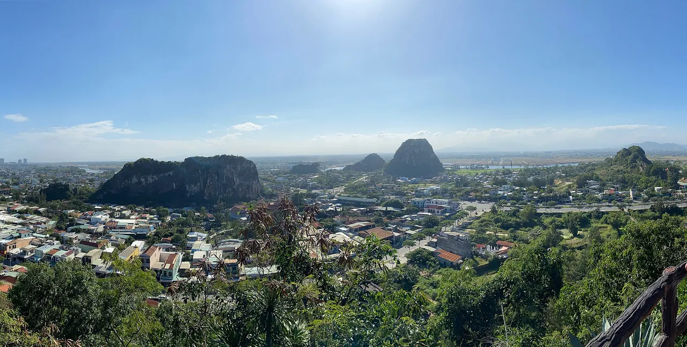
3. The Marble Mountains in Ngũ Hành Sơn district, between the city and Hội AnAlt: A wide view over low-rise houses and greenery to steep limestone outcrops under a clear blue skyKuroczynski · CC BY-SA 4.0 · Commons · 1280×647
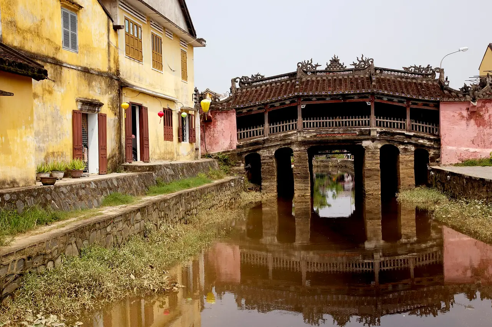
4. The Japanese Covered Bridge in Hội An, part of Da Nang since 2025Alt: An old covered bridge with a tiled roof over a still canal, beside yellow-walled houses with wooden shuttersBiggs · CC BY 2.0 · Commons · 1280×853
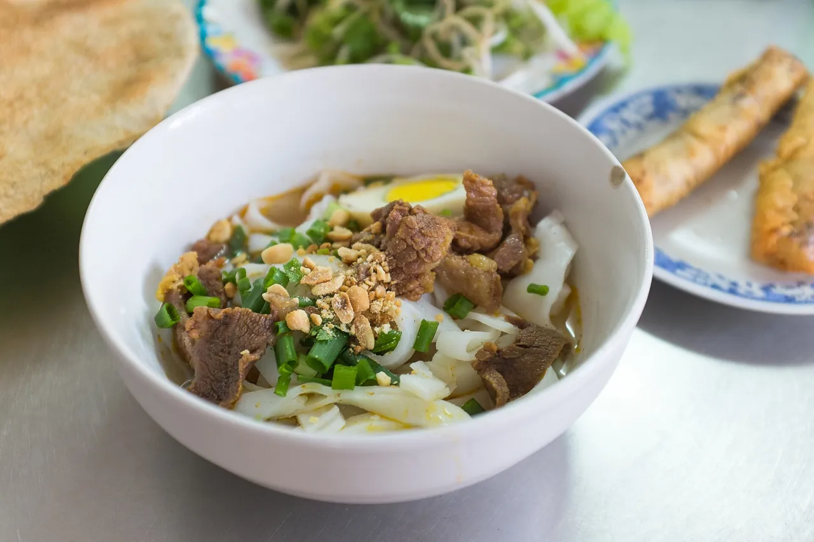
5. Mì Quảng, the region's signature noodles with beef, peanuts and eggAlt: A white bowl of wide rice noodles topped with beef, crushed peanuts, spring onion and half an egg, beside fried spring rollsChristopher Crouzet · CC BY-SA 4.0 · Commons · 1280×853
Cebu cebu
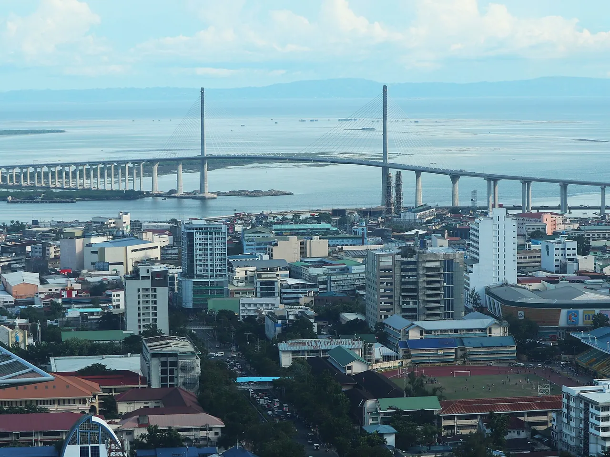
1. Downtown Cebu City and the Cebu–Cordova Link Expressway bridge across to MactanAlt: A dense city of mid-rise buildings seen from above, with a long cable-stayed bridge crossing a wide channel behind itPatrickroque01 · CC BY-SA 4.0 · Commons · 1280×960
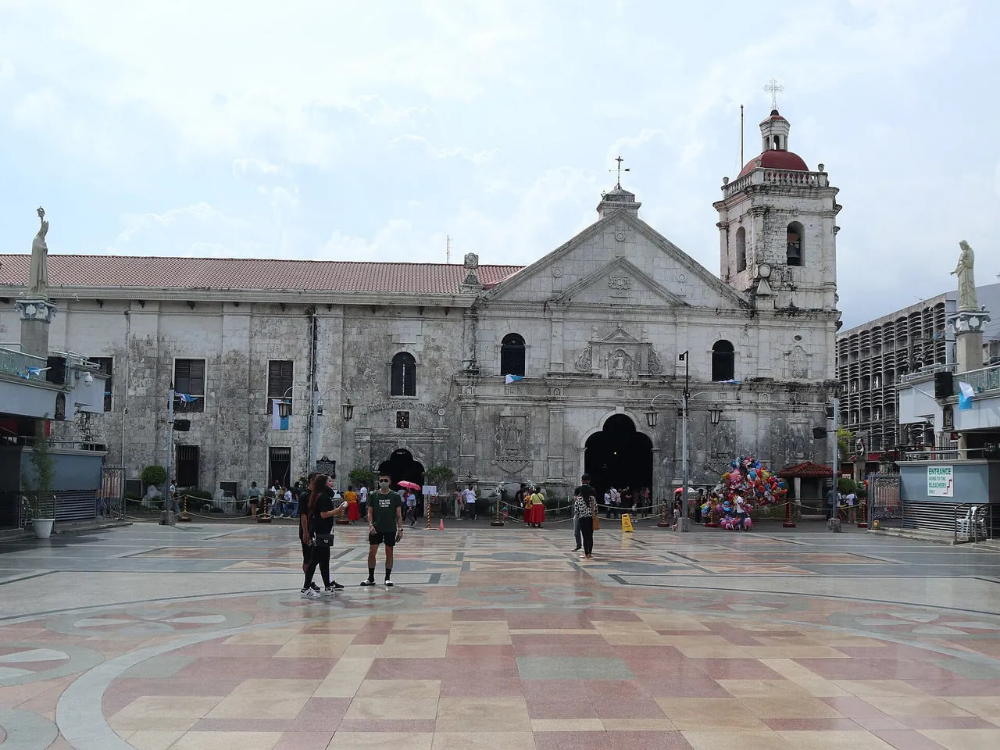
2. The Basilica del Santo Niño, the Philippines' oldest Catholic church, founded in 1565Alt: A weathered white coral-stone church with a bell tower behind a wide patterned plaza with a few peoplePatrickroque01 · CC BY-SA 4.0 · Commons · 1280×960
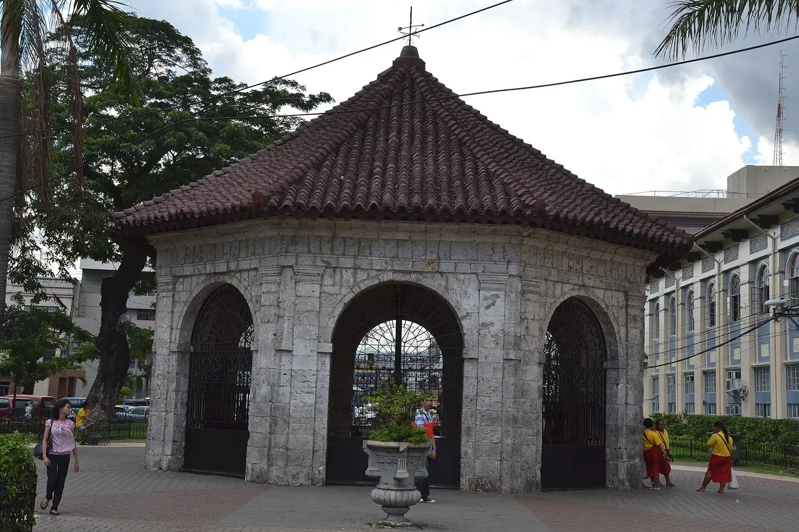
3. The kiosk that houses Magellan's Cross, beside the basilicaAlt: An octagonal stone pavilion with a red tiled roof and iron-gated arches on a paved square, with trees behindshankar s. · CC BY 2.0 · Commons · 1280×853
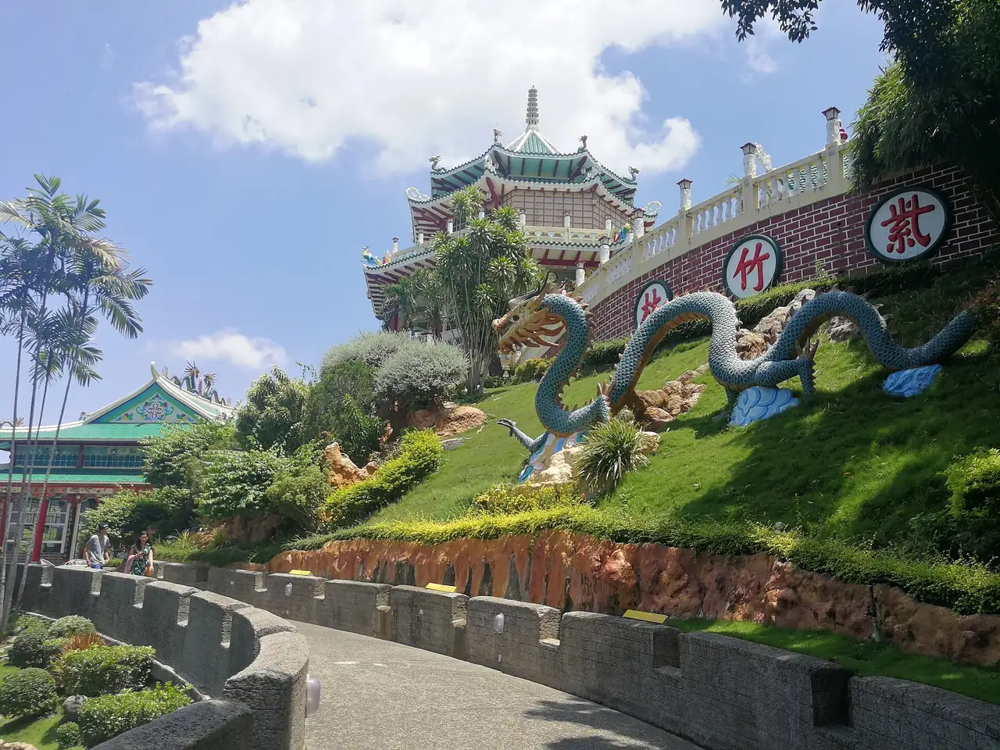
4. The hillside Taoist Temple in Beverly Hills, Cebu CityAlt: A green-roofed tiered pagoda on a hill above a lawn with a long dragon statue and a curving stone-walled pathNeigo Genetiano · CC BY-SA 4.0 · Commons · 1280×960
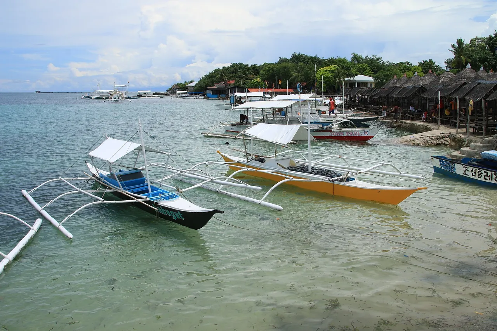
5. Outrigger bangka boats in clear shallows on Mactan IslandAlt: Two outrigger boats with white canopies moored in clear green water, with more boats and thatched beach huts behindØyvind Holmstad · CC BY-SA 4.0 · Commons · 1280×853


_(26721020059).jpg){kind=link}

.jpg){kind=link}


.jpg){kind=link}

.jpg){kind=link}
.jpg){kind=link}
.jpg){kind=link}